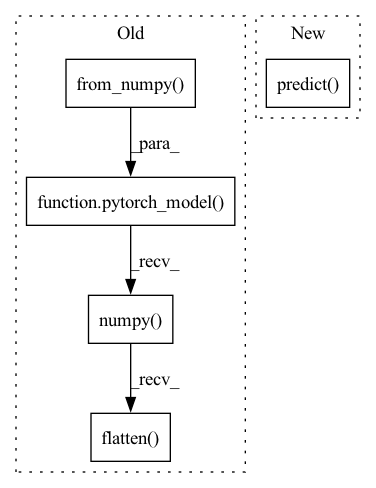

Pattern ID :6498

Before Change
pytorch_model = convert_xgboost(model, X[0:1], extra_config=extra_config)
self.assertTrue(pytorch_model is not None)
np.testing.assert_allclose(
model.predict(X), pytorch_model(torch.from_numpy(X)).numpy().flatten(), rtol=1e-06, atol=1e-06
)
// Regressor
After Change
pytorch_model = model.to("pytorch", X[0:1], extra_config=extra_config)
self.assertTrue(pytorch_model is not None)
np.testing.assert_allclose(
model.predict(X), pytorch_model.predict(X), rtol=1e-06, atol=1e-06
)
// Regressor
In pattern: SUPERPATTERN
Frequency: 3
Non-data size: 5
Instances
Fragment ID: 22531579
Project Name: microsoft/hummingbird
Commit Name: cb2bf98c6e98cbd355c1cc0d22b181928b0db14e
Time: 2020-05-01
Author: hummingbird@supun-p100-large.wv4ydpj3uqtevgy1qawe5v0n4b.xx.internal.cloudapp.net
File Name: tests/test_xgboost_converters.py
M Class Name: TestXGBoostConverter
N Class Name: TestXGBoostConverter
M Method Name: _run_xgb_regressor_converter(3)
N Method Name: _run_xgb_regressor_converter(3)
M Parent Class: unittest.TestCase
N Parent Class: unittest.TestCase
M File Name: tests/test_xgboost_converters.py
N File Name: tests/test_xgboost_converters.py
M Start Line: 84
M End Line: 93
N Start Line: 84
N End Line: 93
'>
Before Change
pytorch_model = convert_lightgbm(model, extra_config=extra_config)
self.assertTrue(pytorch_model is not None)
np.testing.assert_allclose(
model.predict(X), pytorch_model(torch.from_numpy(X)).numpy().flatten(), rtol=1e-06, atol=1e-06
)
// Regressor
After Change
pytorch_model = model.to("pytorch", extra_config=extra_config)
self.assertTrue(pytorch_model is not None)
np.testing.assert_allclose(
model.predict(X), pytorch_model.predict(X), rtol=1e-06, atol=1e-06
)
// Regressor
'>
Fragment ID: 22531578
Project Name: microsoft/hummingbird
Commit Name: cb2bf98c6e98cbd355c1cc0d22b181928b0db14e
Time: 2020-05-01
Author: hummingbird@supun-p100-large.wv4ydpj3uqtevgy1qawe5v0n4b.xx.internal.cloudapp.net
File Name: tests/test_lightgbm_converters.py
M Class Name: TestLGBMConverter
N Class Name: TestLGBMConverter
M Method Name: _run_lgbm_regressor_converter(3)
N Method Name: _run_lgbm_regressor_converter(3)
M Parent Class: unittest.TestCase
N Parent Class: unittest.TestCase
M File Name: tests/test_lightgbm_converters.py
N File Name: tests/test_lightgbm_converters.py
M Start Line: 84
M End Line: 93
N Start Line: 84
N End Line: 93
'>
Before Change
pytorch_model = convert_sklearn(model, extra_config=extra_config)
self.assertTrue(pytorch_model is not None)
np.testing.assert_allclose(
model.predict(X), pytorch_model(torch.from_numpy(X)).numpy().flatten(), rtol=1e-06, atol=1e-06
)
// Regressor
After Change
model.fit(X, y)
pytorch_model = model.to_pytorch(extra_config=extra_config)
self.assertTrue(pytorch_model is not None)
np.testing.assert_allclose(model.predict(X), pytorch_model.predict(X), rtol=1e-06, atol=1e-06)
// Regressor
def test_random_forest_regressor_converter(self):
'>
Fragment ID: 22531577
Project Name: microsoft/hummingbird
Commit Name: 38994f8c8a429639bba6c446adb7ea18a91ff18a
Time: 2020-05-01
Author: mainterl@microsoft.com
File Name: tests/test_sklearn_decision_tree_converters.py
M Class Name: TestSklearnRandomForestConverter
N Class Name: TestSklearnRandomForestConverter
M Method Name: _run_random_forest_regressor_converter(3)
N Method Name: _run_random_forest_regressor_converter(3)
M Parent Class: unittest.TestCase
N Parent Class: unittest.TestCase
M File Name: tests/test_sklearn_decision_tree_converters.py
N File Name: tests/test_sklearn_decision_tree_converters.py
M Start Line: 91
M End Line: 100
N Start Line: 102
N End Line: 110